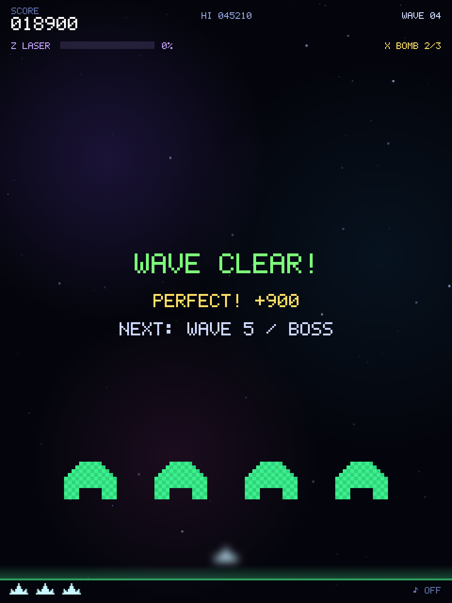

CHAPTER 14 · 全23項目
ウェーブクリアと次のウェーブ
敵を全滅させたら短いクリア表示のあと、操作を止めずに次のウェーブへ進みます。
主な参照先：updatePlay / update / drawOverlay / makeWave / startGame
通常の敵もボスもいなくなったらクリア
// --- ウェーブクリア ---
if (aliveN === 0 && !boss) {
saucerSoundStop();
pBullets = []; eBullets = []; powerups = [];
special.laserT = 0;
if (waveNoDamage) {
perfectBonus = 500 + wave * 100;
addScore(perfectBonus);
sfx.perfect();
} else {
perfectBonus = 0;
sfx.clear();
}
setState("clear");
}updatePlay() の最後で aliveN === 0 && !boss を調べます。aliveN は生き残っている敵の数で、編隊から突入中の敵も含みます。突入した敵は画面外へ出ると編隊の元の位置へ戻るだけなので、飛び去らせてもクリアにはなりません。ボス戦では敵の配列が空で、コアを壊して boss が null になった時点でクリアです。
クリアの瞬間に、残っている自弾・敵弾・カプセルを消し、UFO の音と照射中の合体レーザーを止めます。waveNoDamage はウェーブ開始時に true になり、被弾すると（シールドで防いだ場合も）false になります。true のまま全滅させると、PERFECT ボーナスとして 500 + wave * 100 点を加えます。ウェーブ4なら900点です。最後に setState("clear") で状態を切り替えますが、releaseControls() は呼ばず、押しっぱなしの入力をそのまま残します。
1.6秒たったら入力を待たずに次のウェーブへ
} else if (state === "clear") {
// 操作を止めずに次のウェーブへ。押しっぱなしの射撃・移動キーもそのまま引き継ぐ。
if (stateT > 1.6) { wave++; makeWave(); setState("play"); }
}clear の間、update(dt) は updatePlay() を呼びません。自機は動かず、弾も出ず、敵も攻撃しません。合体レーザーとボムも canUseSpecial() が state === "play" を条件にしているため使えません。updateCommon() だけが動くので、星やパーティクル、浮かぶ文字は流れ続けます。
stateT が1.6秒を超えたフレームで wave++、makeWave()、setState("play") を続けて実行し、次のウェーブが始まります。プレイヤーの入力は待ちません。setState() が状態を play に変えるので、この分岐が2回実行されることもありません。
押しっぱなしの操作を引き継ぐ
クリア表示は入力を待つ画面ではないので、入力を解除する理由がありません。解除すると、ウェーブのたびに射撃ボタンを押し直すことになります。そこでクリア時も次のウェーブの開始時も releaseControls() を呼ばず、keys と shooting のフラグを残します。クリア表示の間は updatePlay() が止まっているので何も起きず、play に戻った最初のフレームで updatePlay() がフラグを読み、すぐに射撃と移動を再開します。入力を解除するのは、ゲーム開始、ゲームオーバー、ポーズ開始、pointercancel のときです。
// ミスからの復帰中やウェーブクリア表示中に押し始めても、そのまま連射が続くようにする(キーボードと同じ)。
if ((state === "play" || state === "dying" || state === "clear") && !paused) shooting = true;クリア表示中に押し始めた場合も同じです。pointerdown は、状態が play・dying・clear のどれかでポーズ中でなければ shooting を true にします。直前の handlePress() は clear では何もしないので、クリックがゲーム開始やリトライとして扱われることはありません。キーボードの Space・Enter は状態に関係なく keys.fire を立てるので、マウスでもキーボードでも同じ結果になります。ボタンを離すと pointerup で shooting が false に戻ります。
クリア表示と次のウェーブの予告
function drawOverlay(t) {
if (state === "clear") {
drawText("WAVE CLEAR!", W / 2, 290, { size: 30, color: "#7dff7a", weight: 900 });
if (perfectBonus > 0) {
drawText(`PERFECT! +${perfectBonus}`, W / 2, 326, { size: 17, color: "#ffe066" });
}
drawText(`NEXT: WAVE ${wave + 1}${(wave + 1) % 5 === 0 ? " / BOSS" : ""}`, W / 2, 356, { size: 14, color: "#cfd8ff" });
// 新しい攻撃が始まるウェーブの前には、何が来るかを予告する(1UP! の表示 y=430〜 より上に収める)。
const news = WAVE_NEWS[wave + 1];
if (news) drawText(T(news), W / 2, 380, { size: 13, color: "#ff8a9e" });draw() はタイトル以外の画面で drawGame() と drawHud() のあとに drawOverlay() を呼ぶので、クリアの文字は戦場の上に重なります。clear の間はまだ wave++ をしていないため、次のウェーブ番号は wave + 1 です。makeWave() は wave % 5 === 0 のウェーブをボス戦にするので、同じ式を wave + 1 に当てはめ、次がボス戦なら「 / BOSS」を付け足します。PERFECT の行は perfectBonus が0より大きいときだけ表示します。
最後の2行は、次のウェーブで新しい攻撃が始まるときの予告です。WAVE_NEWS はウェーブ番号から文言のキーを引く表で、ウェーブ6・11・16の新しい攻撃と、ウェーブ10・15・20のボスのレベルアップが登録されています。WAVE_NEWS[wave + 1] が見つかったときだけ、y=380 に1行を足します。文言は T() で表示言語に合わせて選びます。
PERFECT ボーナスで残機が増えた場合の「1UP!」は y=430 に出します。中央の WAVE CLEAR!・PERFECT!・予告の行・ウェーブ開始の表示（y=244〜380）と重ならない高さです。

次のウェーブへ持ち越すもの
pBullets = []; eBullets = []; particles = []; popups = []; rings = []; powerups = [];
saucer = null; saucerSoundStop(); saucerT = rand(10, 20);
fireT = 1.5; bannerT = 1.3; freezeT = 0;
waveNoDamage = true; perfectBonus = 0;
resetCombo(); // コンボはウェーブごとに数え直す(次のウェーブの最初の撃破で前のウェーブから続けない)
player.alive = true; player.inv = 1.5; player.cool = 0;
special.laserT = 0; special.bombT = 0;
flightT = 6; flightCount = 0; volleyT = 4;
makeBarriers();
}makeWave() の前半は敵の配列と編隊の位置を作り直します（敵の編隊とウェーブ生成）。後半では弾・エフェクト・カプセル・UFO・攻撃のタイマー（3方向弾の一斉射撃の volleyT も含む）を初期化し、resetCombo() でコンボを数え直し、自機に1.5秒の無敵時間を与え、バリアを新品に作り直します。スコアや残機、ゲージやボム、パワーアップには触れません。
function startGame() {
score = 0; scoreShown = 0; wave = 1; lives = 3; nextLife = FIRST_LIFE;
newRecord = false; maxMult = 1;
active.wide = 0; active.rapid = 0; active.shield = 0; active.beam = 0;
special.charge = 0; special.bombs = 2;
paused = false; releaseControls();
resetCombo();
makeWave();
setState("play");
}startGame() はそれらを初期値に戻してから makeWave() を呼びます。2つを比べると、ウェーブをまたいで持ち越すものと、新しいゲームで初めて消えるものが分かります。
| 値 | 次のウェーブ（makeWave()） | 新しいゲーム（startGame()） |
|---|---|---|
スコア・残機・次の1UP（score、lives、nextLife） | 持ち越す | 0点・3機・10000点に戻す |
合体レーザーのゲージ・ボム（special.charge、special.bombs） | 持ち越す | 0%・2個に戻す |
連結砲・シールド（active.beam、active.shield） | 持ち越す | 0に戻す |
3方向弾・連射の残り時間（active.wide、active.rapid） | 持ち越す。クリア表示中は減らない | 0に戻す |
コンボ（combo） | resetCombo() で消す（次のウェーブの最初の撃破で前のウェーブから続けない） | resetCombo() で消す |
押しっぱなしの入力（keys、shooting） | 持ち越す | releaseControls() で解除 |
| 敵・弾・カプセル・UFO・バリア | 作り直す | makeWave() を呼ぶので同じく作り直す |